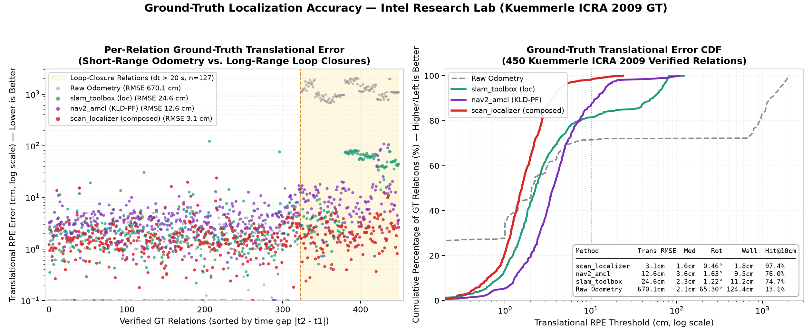
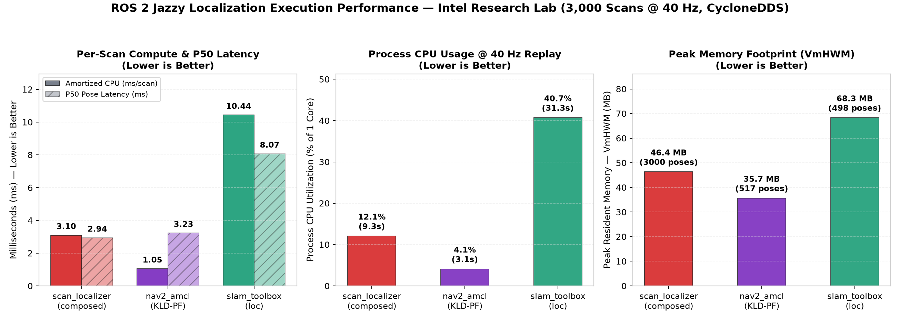

9.1核心评测结论速览（点击切换指标维度）
下面这张交互图表直接汇总了真实 ROS 2 回放实测（Intel Research Lab, 3000 帧）与 x86 Release 受控消融核心数字。切换顶部分段按钮比较精度、耗时与大误差捕获能力：
核心实验数据对比看板实测数据
9.2Intel Lab 450 组精校真值三方同台评测
在相同 591×580 (0.05m) 静态先验地图上，以 ROS 2 Jazzy use_sim_time:=true 40 Hz 顺序回放 intel.clf 全长 128.42 m 环路（3,000 帧激光），采用 **450 组来自 AIS Freiburg 官方 Kümmerle (ICRA 2009) 的人工精校 SE(2) 真值关系**（含 127 个跨回环约束 `Δt > 20s`）评测三方系统：
| 定位方案 | 有效更新数 | GT 平移 RPE RMSE | GT 中位误差 | 回环误差 (>20s) | GT 航向 RMSE | WallDist 贴墙率 (<10cm) | 总 CPU 占比 / 单帧 | 峰值 RSS |
|---|---|---|---|---|---|---|---|---|
| scan_localizer (Composed) | 3,000 | 3.06 cm | 1.57 cm | 2.95 cm | 0.46° | 97.4% (1.75 cm) | 12.07% (3.10 ms) | 46.36 MB |
| nav2_amcl (KLD-PF 500–2000) | 517 | 12.57 cm | 3.64 cm | 22.60 cm | 1.63° | 76.0% (9.53 cm) | 4.10% (1.05 ms) | 35.66 MB |
| slam_toolbox (Localization) | 498 | 24.56 cm | 2.28 cm | 43.99 cm | 1.22° | 74.7% (11.16 cm) | 40.70% (10.44 ms) | 68.34 MB |
| Raw Odometry (对照组) | 3,000 | 670.12 cm | — | 1261.40 cm | 65.30° | 13.1% | — | — |

图 1 · Intel Lab 轨迹对比（点击可放大）：黑色虚线为精校真值轨迹，
scan_localizer（蓝）全程紧贴真值与走廊墙壁。
图 2 · 450 组 GT 相对位姿误差分布与累计曲线。

图 3 · CPU 占用、P50/Max 延迟与峰值内存对比。
9.3E1–E10 受控消融基准与“防自欺”方法论
Phase 5 在基准代码里抓出的三大“自欺欺人”陷阱
- 陷阱 1：
rng() % N把mt19937无符号随机数传给浮点分支导致 0 动态障碍：修复前 E4 表面测动态鲁棒性，实际注入箱数接近 0，修复后强制验证最小注入 200 箱才可过审。 - 陷阱 2：激光点云离散重分箱引入
-0.25°偏置：新写make_laser_ranges直接按原生光束角angle_min + i * angle_increment求交（sim_world.cpp:L198）。 - 陷阱 3：用“有误差的真值泄露”当 E6 基准先验：严格在配对试验（paired trials）下锁定同一套真值点云与同一张
MapField评测所有匹配器。